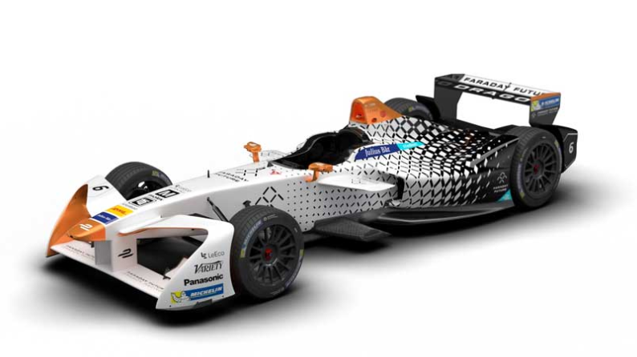

Dragon Racing has partnered with Faraday Future for season three of the FIA Formula E Championship.In the hands of Jerome D’Ambrosio the team has been a race winner in both of the previous seasons, while Loic Duval has also stood on the podium.Faraday Future is a Chinese-backed, American start-up technology company focused on the development of intelligent electric vehicles. It is set to release its first production car in 2017.Dragon Racing was founded by Jay Penske and Steve Luczo, Chairman & CEO of Seagate Technologies in 2006. It competed in the IndyCar Series from 2007 until 2014.
About the racer in this car.
1.Jerome D'Ambrosio

Intresting Fact
D'Ambrosio appeared on the first episode of the Grand Tour?
BIOGRAPHY
Jerome D'Ambrosio has been with Dragon Racing throughout Formula E, and remains part of the line-up following the partnership with Faraday Future.The Belgian is a two-time race winner and has also scored both of the team's two pole positions.
As with the majority of Formula E drivers, D’Ambrosio started his journey in karting before progressing up the single-seater ranks in Formula Renault, Formula Renault 3.5, Formula Masters and GP2.D’Ambrosio joined the Renault F1 driver development programme in 2004 and was eventually promoted to official test driver in 2010. He made his Formula 1 debut a year later with Marussia before linking up with Lotus as a reserve driver the following season.
Points & Results.
Points : 207
Poles : 2
Front Rows : 4
Fastest Laps :1
Raced Laps :1135
Led Races :3
Led Laps : 30
Led Km : 68
2.LOIC DUVAL
Intresting Fact
Duval partnered sportscar legends Tom Kristensen and Allan McNish to their sole world title glory?
BIOGRAPHY
Loic Duval joined Formula E at round five of season one in Miami, and his contribution helped Dragon Racing finish as runners-up in the inaugural season of Formula E.He retains his place in the renamed Faraday Future Dragon Racing team for season three.Duval began his career in karting in 2002 winning the French Formula Campus title. The following year he clinched the French Formula Renault Championship before moving to race in Formula Three Euro Series. He picked up two podiums and had his first taste of Formula 1 machinery in a test for the Renault F1 team.
In 2005, Duval finished the year sixth in F3 Euro Series and secured pole at the famous Macau Grand Prix. He then moved to Japan where he began racing in Formula Nippon and Super GT. He continued in Formula Nippon and made two starts for A1 Team France in the A1GP series in Australia and New Zealand. He won the 2009 Formula Nippon Championship with four wins driving for Nakajima Racing after finishing second in 2008.Duval has also competed in endurance racing in both the Le Mans 24 Hours and the World Endurance Championship. His most notable victory came in the 2013 Le Mans 24 Hours for Audi.Following Audi's decision to leave the WEC, Duval has moved to its DTM line-up for 2017.
Points & Results.
Points : 121
Poles : 0
Front Rows : 1
Fastest Laps :1
Raced Laps :877
Led Races :2
Led Laps : 3
Led Km : 9